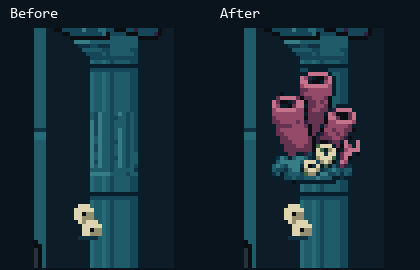
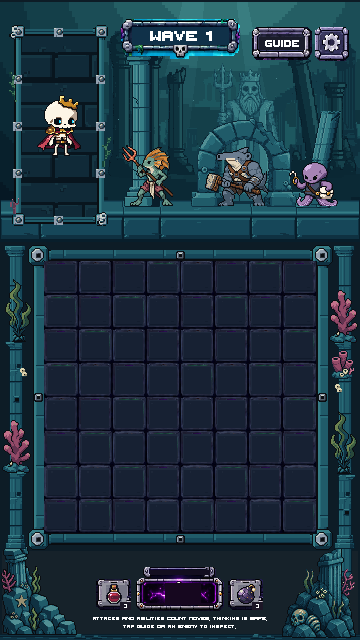
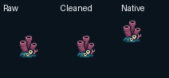

One new compact sponge pocket, attached to the right column. Existing coral, kelp, shells, starfish and relic are retained. Art-only review candidate. No animation, production integration or merge.
Report · QA · Native manifest · Generation lineage

Static art-only captures, with existing actors and empty board cells. Images display at stored resolution; scroll for the larger captures.


Raw → cleaned source → native padded prop. Geometry and native pixel scale preserved.
The small trident was rejected from assembly after native-size review: too much like a glyph rather than weathered stone. It is not placed in the scene.
Reference only. The current game layout and shared controls remain authoritative.
Unity validator, six-size exact native mapping, editable-source roundtrips, connected-foot support, full visibility, frame clearance and protected-file checks passed. Accepted art, board dimensions and shared HUD remain unchanged.
PixelLab: 5 generations spent · 553.20 remaining · 89 cumulative. Stage09 not started.